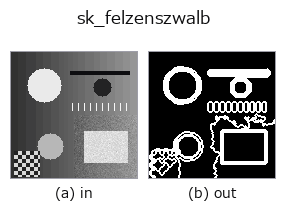

segmentation op• 数据种类:image → region
• 调用:fullseye.apply(img, "sk_felzenszwalb", a=0.5, b=0.5)(2-D 的模型是一张图 + 两个标量旋钮 a,b∈[0,1])

*图为在 128×128 合成输入上实际运行的输出。左为输入，右为输出(非图像的返回值直接显示其值)。*
Felzenszwalb 基于图的区域分割。以像素为节点进行最小生成树聚类,是一种即使没有明确边界也能对图像进行过分割(过度分割)的高速方法。此处返回的是分割结果的边界线区域。
> 以下的详细说明为原文 —— 摘要与标题已翻译。
HALCON に直接対応するものは無い。実装は `segmentation.find_boundaries(segmentation.felzenszwalb(v, scale=20+200*a, channel_axis=None))` —— a は scale(観測レベル。大きいほどセグメントが少なく大きくなる)を 20〜220 に振る。sigma(前処理の平滑化)・min_size は既定値(0.8, 20)のまま固定。b は未使用。
• gallery2d_segmentation 族使用指南
• 示例数据目录(下载 URL / 许可证) —— 2-D 用 skimage.data(BSD/公有领域)加合成图,3-D 给出真实数据源(Stanford/PDS 等)的下载 URL。
• 算子来历与参考文献 —— 该算子族所依据的研究/方法出处。
• 算法的正典(作者・年份)与用途见上面的族使用指南。
下面的程序已确认可以运行(与图相同的输入)。在 Studio 帮助中，此块会变成按钮，可当场加载并运行。
sk_felzenszwalb 0.50 0.50
▸ Load this pipeline · Load & run
• gallery2d_segmentation — py -3.11 examples/gallery2d_segmentation.py
region 作为输入)identity · reg_erode · reg_dilate · reg_open · reg_close · fill_holes · select_largest · remove_small
segmentation)threshold · otsu · canny · adaptive_gauss_thresh · sk_otsu · sk_li · sk_yen · sk_sauvola
*Provenance: ops.py — 2D 算子登记表。本条目由 tools/opdocs.py md 自动生成(请勿手工编辑)。*
© 2026 Kazufumi Furuse — Fullseye operator documentation. Licensed under Apache-2.0.